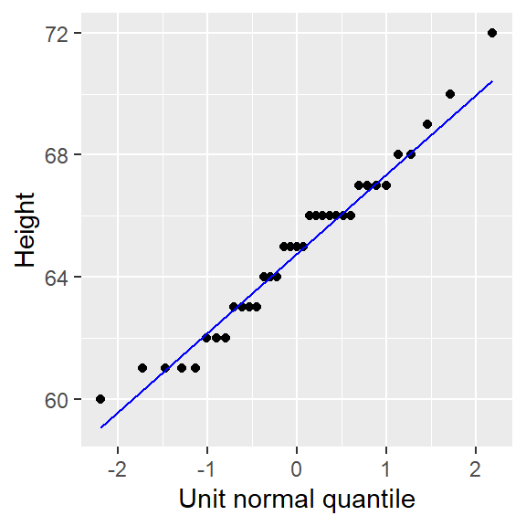

18 The theoretical q-q
| dplyr | ggplot2 | lattice | tidyr |
|---|---|---|---|
| 1.0.10 | 3.4.0 | 0.20.45 | 1.3.0 |
18.1 Introduction
Thus far, we have used the quantile-quantile plots to compare the distributions between two empirical (i.e. observational) datasets. This is sometimes referred to as an empirical Q-Q plot. We can also use the q-q plot to compare an empirical distribution to a theoretical distribution (i.e. one defined mathematically). Such a plot is usually referred to as a theoretical Q-Q plot. Examples of popular theoretical distribution are the normal distribution (aka the Gaussian distribution), the chi-square distribution, and the exponential distribution just to name a few.

There are many reasons we might want to compare empirical data to theoretical distributions:
A theoretical distribution is easy to parameterize. For example, if the shape of the distribution of a batch of numbers can be approximated by a normal distribution we can reduce the complexity of our data to just two values: the mean and the standard deviation.
If data can be approximated by certain theoretical distributions, then many mainstream statistical procedures can be applied to the data.
In inferential statistics, knowing that a sample was derived from a population whose distribution follows a theoretical distribution allows us to derive certain properties of the population from the sample. For example, if we know that a sample comes from a normally distributed population, we can define confidence intervals for the sample mean using a t-distribution.
Modeling the distribution of the observed data can provide insight into the underlying process that generated the data.
But very few empirical datasets follow any theoretical distributions exactly. So the questions usually ends up being “how well does theoretical distribution X fit my data?”
The theoretical quantile-quantile plot is a tool to explore how a batch of numbers deviates from a theoretical distribution and to visually assess whether the difference is significant for the purpose of the analysis. In the following examples, we will compare empirical data to the normal distribution using the normal quantile-quantile plot.
18.2 The normal q-q plot
The normal q-q plot is just a special case of the empirical q-q plot we’ve explored so far; the difference being that we assign the normal distribution quantiles to the x-axis.
18.2.1 Drawing a normal q-q plot from scratch
In the following example, we’ll compare the Alto 1 group to a normal distribution. First, we’ll extract the Alto 1 height values and save them as an atomic vector object using dplyr’s piping operations. However, dplyr’s operations will return a dataframe–even if a single column is selected. To force the output to an atomic vector, we’ll pipe the subset to pull(height) which will extract the height column into a plain vector element.
library(dplyr)
df <- lattice::singer
alto <- df %>% filter(voice.part == "Alto 1") %>% pull(height)Next, we need to sort alto in ascending order.
alto <- sort(alto)Next, we need to find the matching normal distribution quantiles. We first find the \(f\)-values for alto, then use qnorm to find the matching normal distribution values from those same \(f\)-values
i <- 1:length(alto)
fi <- (i - 0.5) / length(alto)
x.norm <- qnorm(fi)Now we can plot the sorted alto values against the normal values.
plot( alto ~ x.norm, type = "p", xlab = "Normal quantiles", pch = 20)
When comparing a batch of numbers to a theoretical distribution on a q-q plot, we are looking for significant deviation from a straight line. To make it easier to judge straightness, we can fit a line to the points. Note that we are not creating a 45° (x=y) slope as was done with the empirical q-q plot–the range of values between both sets of numbers do not match. Here, we are only seeking the straightness of the point pattern.
There are many ways one can fit a line to the data, Cleveland opts to fit a line to the first and third quartile of the q-q plot. The following chunk of code identifies the quantiles for both the alto dataset and the theoretical normal distribution. It then computes the slope and intercept from these coordinates.
# Find 1st and 3rd quartile for the Alto 1 data
y <- quantile(alto, c(0.25, 0.75), type = 5)
# Find the 1st and 3rd quartile of the normal distribution
x <- qnorm( c(0.25, 0.75))
# Now we can compute the intercept and slope of the line that passes
# through these points
slope <- diff(y) / diff(x)
int <- y[1] - slope * x[1]Next, we add the line to the plot.
abline(a = int, b = slope )18.2.2 Using R’s built-in functions
R has two built-in functions that facilitate the plot building task when comparing a batch to a normal distribution: qqnorm and qqline. Note that the function qqline allows the user to define the quantile method via the qtype= parameter. Here, we set it to 5 to match the \(f\)-value calculation adopted in this course.
qqnorm(alto)
qqline(alto, qtype = 5)
That’s it. Just two lines of code!
18.2.3 Using the ggplot2 plotting environment
18.2.3.1 ggplot2 version 3.0 or greater
As of version 3.0, ggplot has the stat_qq_line function (or geom_qq_line) that will generate the interquartile fit. So to generate the theoretical q-q plot, use the stat_qq function (or geom_qq) to generate the point plot, then call stat_qq_line to generate the IQR fit.
library(ggplot2)
ggplot() + aes(sample = alto) + stat_qq(distribution = qnorm) +
stat_qq_line(line.p = c(0.25, 0.75), col = "blue") + ylab("Height")
We can, of course, make use of ggplot’s faceting function to generate trellised plots. For example, the following plot replicates Cleveland’s figure 2.11 (except for the layout which we’ll setup as a single row of plots).
ggplot(df, aes(sample = height)) + stat_qq(distribution = qnorm) +
stat_qq_line(line.p = c(0.25, 0.75), col = "blue") + ylab("Height") +
facet_wrap(~ voice.part, nrow = 1) + ylab("Height")
The stat_qq_line function uses the built-in quantile function and as such will adopt the default quantile type 7 (i.e. it computes the f-value as \((i - 1)/(n - 1))\). This differs from Cleveland’s approach to computing the f-value. This setting cannot be changed in stat_qq_line.
18.2.3.2 ggplot2 version older than 3.0
With an older version of ggplot2, you will need to construct the interquartile fit from scratch. We can still take advantage of the stat_qq() function to plot the points, but the equation for the line must be computed manually (as was done earlier). Those steps will be repeated here. Note that with this example, we are adopting Cleveland’s f-value algorithm of \((i - 0.5)/n\).
library(ggplot2)
# Find the slope and intercept of the line that passes through the 1st and 3rd
# quartile of the normal q-q plot
y <- quantile(alto, c(0.25, 0.75), type = 5) # Find the 1st and 3rd quartiles
x <- qnorm( c(0.25, 0.75)) # Find the matching x-axis values
slope <- diff(y) / diff(x) # Compute the line slope
int <- y[1] - slope * x[1] # Compute the line intercept
# Generate normal q-q plot
ggplot() + aes(sample = alto) + stat_qq(distribution = qnorm) +
geom_abline(intercept = int, slope = slope, col = "blue") +
ylab("Height") 
To generated a faceted normal qq plot you first need to compute the slopes for each singer group. We’ll use dplyr’s piping operations to create a new dataframe with singer group name, slope and intercept.
library(dplyr)
intsl <- df %>% group_by(voice.part) %>%
summarize(q25 = quantile(height, 0.25, type = 5),
q75 = quantile(height, 0.75, type = 5),
norm25 = qnorm( 0.25),
norm75 = qnorm( 0.75),
slope = (q25 - q75) / (norm25 - norm75),
int = q25 - slope * norm25) %>%
select(voice.part, slope, int) The above chunk creates the following table.
| voice.part | slope | int |
|---|---|---|
| Bass 2 | 2.965 | 72 |
| Bass 1 | 2.224 | 70.5 |
| Tenor 2 | 1.483 | 70 |
| Tenor 1 | 3.892 | 68.62 |
| Alto 2 | 2.224 | 65.5 |
| Alto 1 | 2.78 | 64.88 |
| Soprano 2 | 2.965 | 64 |
| Soprano 1 | 1.853 | 63.75 |
It’s important that the voice.part names match those in df letter-for-letter so that when ggplot is called, it will know which facet to assign the slope and intercept values to via geom_abline.
ggplot(df, aes(sample = height)) + stat_qq(distribution = qnorm) +
geom_abline(data = intsl, aes(intercept = int, slope = slope), col = "blue") +
facet_wrap(~ voice.part, nrow = 1) + ylab("Height") 
18.3 How normal is my dataset?
Simulations are a great way to develop an intuitive feel for what a dataset pulled from a normal distribution might look like in a normal Q-Q plot. You will seldom come across perfectly normal data in the real world. Noise is an inherent part of any underlying process. As such, random noise can influence the shape of a q-q plot despite the data coming from a normal distribution. This is especially true with small datasets as demonstrated in the following example where we simulate five small batches of values pulled from a normal distribution. The rnorm function is used in this example to randomly pick a number from a normal distribution whose mean is 0 and whose standard deviation is 1. You can, of course, change the mean and standard deviation values to reflect the data being simulated.
To streamline the coding, we will make use of the replicate function to generate five sets of randomly generated normal values. The function will assign each randomly generated batch to its own column, thus creating a matrix. We then convert this matrix to a data frame, then pivot it to a long form for use in ggplot.
library(tidyr)
# Create matrix with each row storing randomly generated
# numbers from a Normal distribution
set.seed(218) # Sets random generator seed for consistant output
sim <- replicate(5 , rnorm(20, mean = 0, sd = 1), simplify = TRUE)
# Create long form version of the sim matrix
siml <- pivot_longer(as.data.frame(sim), names_to = "sim",
values_to = "val", cols = everything())
# Generate q-q plots of the simulated values
ggplot(siml, aes(sample = val)) + stat_qq(distribution = qnorm) +
stat_qq_line(line.p = c(0.25, 0.75), col = "blue") +
facet_wrap(~ sim, nrow = 1) + ylab("Simulated normals")
Of the 5 simulated batches, only V3 and V4 generate q-q plots that reflect a pattern we would expect from a normally distributed batch of values. The other three simulated batches generate plots that could lead one to question whether the data were pulled from a normal distribution, even though we know that they were!
This is why you should always interpret such plots with a healthy dose of skepticism, especially with small datasets.
18.4 How normal q-q plots behave in the face of skewed data
It can be helpful to simulate distributions of difference skewness to see how a normal quantile plot may behave. In the following figure, the top row shows different density distribution plots; the bottom row shows the normal q-q plots for each distribution.